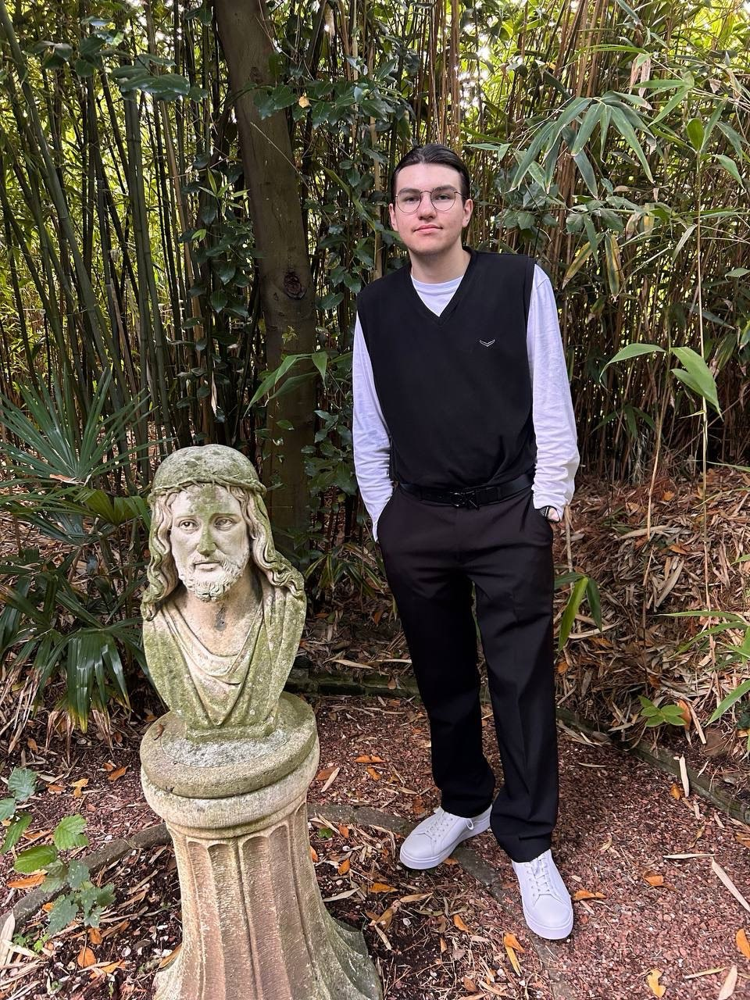

About Me
I was born on February 26, 2004, in Waldshut-Tiengen, located in the Hochrhein region of Baden-Württemberg. Due to my father's new job, our family moved to Donaueschingen in the Black Forest. I spent my childhood and teenage years there until I turned 16, attending the Realschule Donaueschingen up to the 10th grade.
Due to personal conflicts, I relocated to Siegen, about a four-hour drive north. There, I completed my secondary education at the Realschule am Oberen Schloss.
Internships
Industrial Clerk at Ricosta Schuhfabriken GmbH
During this internship, I learned about industrial processes and even had the opportunity to handcraft my own pair of shoes.
Retail Sales Clerk at Thedy Haushaltswaren & Spielzeug
In the 8th grade, I gained experience in logistics and customer interaction during this internship.
IT Internship at SIEGNETZ.IT GmbH
This one-day internship taught me the value of preparation and skills for entering the professional world. Despite being initially rejected, it turned out to be a valuable learning experience.
Internship at Hoppmann Autowelt
At Hoppmann Autowelt, I assisted in administrative and organizational tasks related to the automotive industry. This gave me insights into office workflows and customer service within a professional environment.
Education
After my experiences in Siegen, I decided to pursue further education instead of immediately entering an apprenticeship. I enrolled at the BBS Betzdorf-Kirchen, where I had some of the best years of my academic journey. The supportive teachers and friendly classmates made this time unforgettable, and I remain in contact with many of them to this day.
Personal Interests
- Geography: I enjoy learning about capitals, flags, and world cultures.
- Traveling: Whether it’s a short day trip or a longer journey, I love exploring new places. I often combine visits to my parents with sightseeing to make the most out of every trip.
Spoken Languages
- German: I speak German every day.
- English: As an IT professional, one should know English.
- Russian: My first language, as Russian is spoken in my family home.